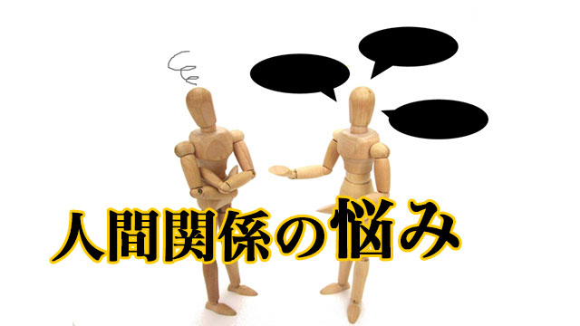

人間関係で悩む人は多い。社会人になると仕事そのものの悩みよりも、同僚や上司、部下との人間関係で神経をすり減らす人の何と多いことか。
問題ごととはすなわち人間関係であるというのは古今東西、世の常であると思います。
このことは言いかえれば私たちは常に「他人」に悩まされている、従って他人をどうにかしようと思っているということです。
振り返ってみれば私も他者との「問題」と格闘し続けた人生を送ってきました。
古くは母親との葛藤、旧友との軋轢そして社会に出てからも実に様々な利害、得失による対立を経験しました。
対立は抗争を生み抗争は人間不信を生む。
そしてそのことが新たな「問題（トラブル）」を引き起こす。
まさに負の連鎖がくり広げられるわけです。
問題が起こると人はそれを何とか解決しようとします。他人を説得したりコミュニケーションを円滑にしようとしたり、色々解決策を講じ出す。しかしそれはたいていうまくいかない。
説得や話し合いはかえって問題をこじれさせることが多いのです。
なぜなら説得や話し合いは、こちらの言い分を何とか相手に分からせようつまり「お前のほうが間違っている」と説き伏せようとする行為だからです。当然相手は反発するか渋々応じるだけ。根本的解決には至らないのです。
ではどうすればいいのか。
答えは簡単で、自分こそが問題をつくりだしている張本人だと認めることです。
こう言ったからといって、自分が悪いと反省しろとか理不尽な目にあっても我慢しろということではありません。あるいは他人を許せという道徳的お説教でもないのです。
「自分が張本人」というのは見方を変えるということです。自分の中にある特定の信念（信条）や、握りしめている価値観や思い込みが外側の世界に投影されその結果「問題」として現象化したのではないかということです。
たとえそれらの信条がどんなに立派であったとしても、その信条（信念）をゆるがす相手が現れると信念の正しさを証明するために相手を問題とせざる得なくなるのです。
場合によっては相手を「敵」と見なし戦わなくてはならなくなる。
「～すべき」という思いこそ元凶
たとえば私の例でいうと若い頃はさまざまな譲れない信条がありました。
「裏表のある人間は許せない」「約束を守らない奴は裏切り者だ」「損得で動く奴は許せない」「いついかなるときも人は自分の考えを常々と主張すべきだ」「理屈ばかりで行動しない奴は最低だ」「金に汚い人間は下品だ」･･･etc
正義感といえば聞こえは良いが、いずれも若気の至りから来るいささか偏狭な信念といえましょう。
とにかくその結果私の内面では以下のような人生観が無意識に出来上がっていたのです。
世の中には不正で不実な人間が多いのだから彼らから身を守り、自分の「正義(信念)」を貫くためには闘わなくてはならない！
自分の人生の実現は闘って勝ち取るものだ。
今なら分かります。こういう考えだから私の信念を証明するために闘うべき相手が私の人生に次々と現れたということが。
私の人生前半が「他人と闘う」と言う問題で占められていた理由がここにあったわけです。
自分の｢正しさ｣を証明するために他者と闘う必要はないのだ。そして正しさを訴える心の底には「自分を認めてもらいたい」という根源的欲求があった。そう気づくと私の周りから他人とのトラブルという問題が徐々に消えていきました。
恐らく自分の中にある「他者から認められたい」「自分を分かって欲しい」という承認欲求に気づいたことが大きかったと思います。
というのは「自分を分かって欲しい」という欲求に気づいた瞬間、それは誰の心にも存在していることに気づいたからです。
日常の人間関係のトラブルの背景には「自分を分かって欲しい」「自分だってガンバっていることを認めて欲しい」という思いがある。
その思いに関しては皆同じだ。
そう考えると他者を敵と見なすことはなくなります。敵とみなさなければ｢問題｣は必要以上に大きくなることもなく、やがて消えていきます。少なくとも私の場合はそうでした。
人間関係で悩んでいる人にアドバイスするなら、他者との間に生じたトラブルそのものに働きかけることよりも自分の内面を探って「～すべき」「～な奴は許せない」という観念や信念を見つけ出し、それらを握りしめている手をゆるめてみましょう。
それらの観念こそが「問題」をつくり出している元凶ではないかと冷静に見つめ直して下さい。
それは少しつらい作業かもしれません。なぜならそれらの価値観はあなたのアイデンティティの一部になっているからです。それを手放すことに抵抗を感じるかも知れません。
だから捨て去るのではなく少しだけゆるめてみること。気づいて感謝するだけでもゆるむかも知れません。
その際他人もその人なりの価値観があって、同じようにそれに縛られているのだということを想像してみて下さい。この作業をくり返しているうちにあなたは気づくかも知れません。
自分を怒らせる他人、イライラさせる他人とは見方を変えれば自分の中にある偏った観念や不必要な信念を教えるためにこそ出現したのではないかということに。
この考えに至ると「問題」のほとんどは消えているでしょう。どうか実践してみて下さい。